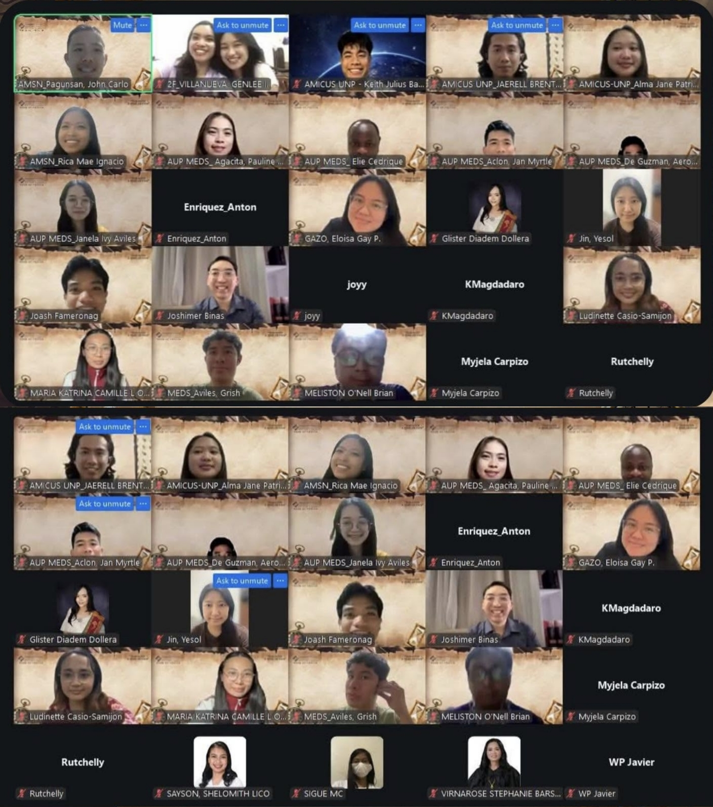
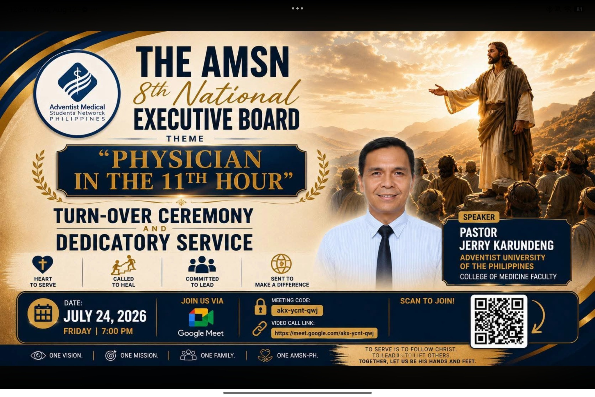
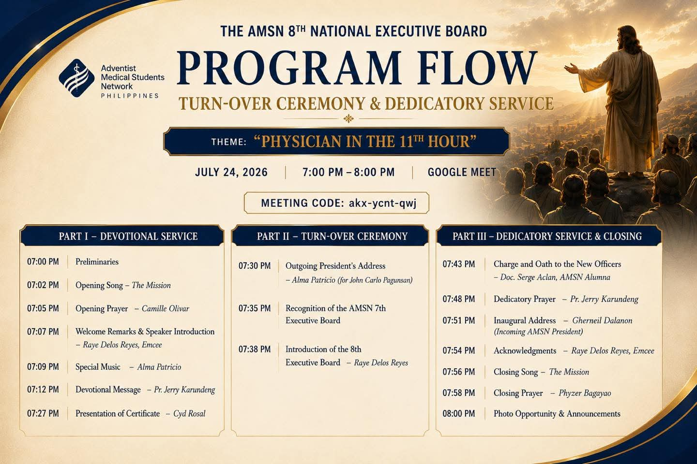
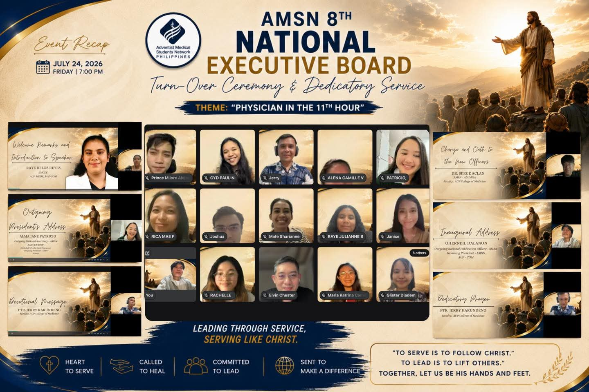
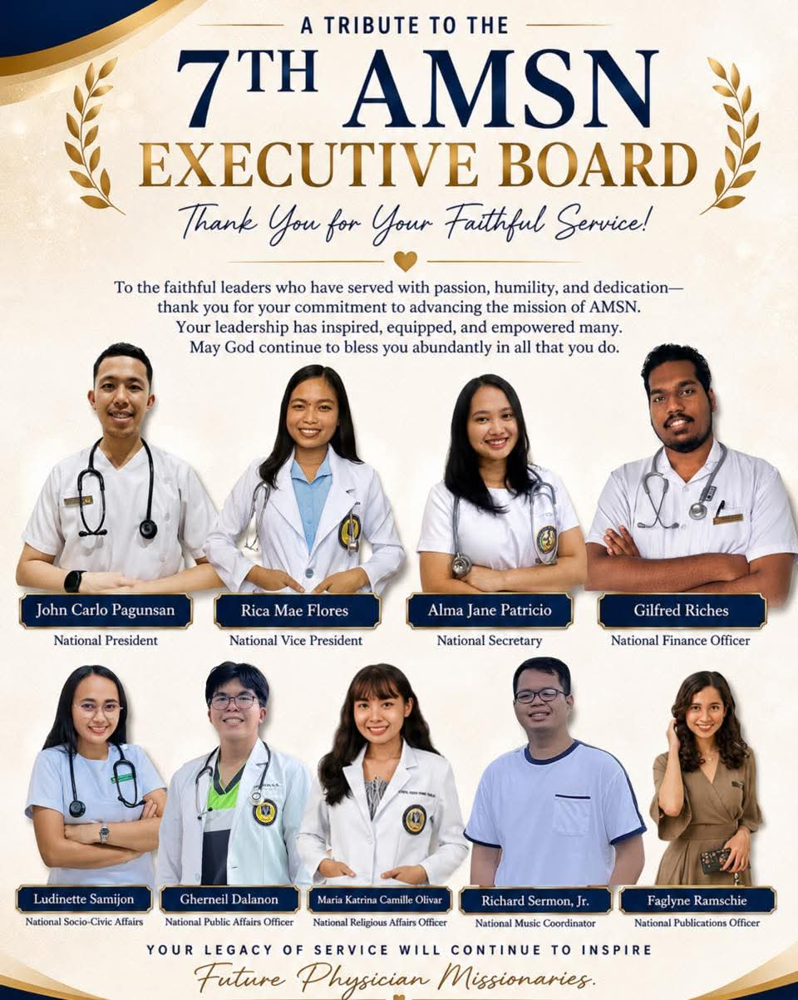
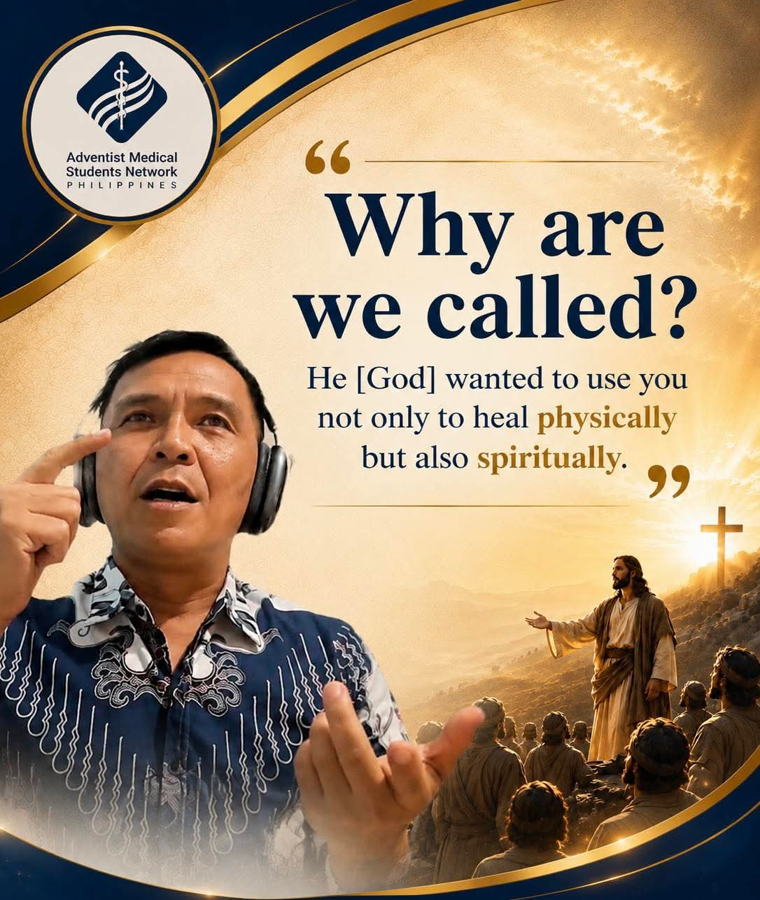

AMiCUS-UNP
Vigan City, Ilocos Sur • Northern Luzon
ADVENTIST MEDICAL STUDENTS NETWORK — PHILIPPINES
Growing in faith. Supporting one another through medicine. Serving with purpose across schools, regions, and seasons of training.
THE NETWORK IN ACTION
We gather across schools and regions through online programs, local chapter connections, fellowship, worship, mentorship, and shared mission. Distance does not keep us from growing as one community.

AMSN ACROSS THE PHILIPPINES
Our network has grown through Adventist medical-student communities in Luzon, Visayas, and Mindanao. These markers show the locations connected with our core organizations and the campus communities we continue to reach.
Map base adapted from Wikimedia Commons, licensed under CC BY-SA 3.0. Location markers are city/region-level references.
ABOUT
WHO WE ARE
We are the Adventist Medical Students Network – Philippines (AMSN-PH), a national community of Adventist medical students from different schools, regions, and stages of training.
Together, we grow spiritually, build meaningful relationships, receive guidance and mentorship, develop as future physicians, and serve through mission and community engagement.
Keeping Christ at the center of the medical journey.
Building a community that understands both medicine and faith.
Learning through mentorship, leadership, and shared experience.
Using medicine and compassion to serve people and communities.
THE NETWORK
WHY A NETWORK?
Medical training takes us to different campuses, hospitals, cities, and communities. Wherever we train, we stay connected beyond institutional and regional boundaries.
Meet Adventist medical students from other schools and regions.
Find fellowship, encouragement, mentorship, and prayer through the medical journey.
Work together on ministries, missions, programs, publications, and national initiatives.
Build relationships that can extend from medical school into the wider Adventist medical community.
AMSN + AMEN
FROM MEDICAL SCHOOL TO MEDICAL MINISTRY
We grow within the wider Adventist medical community, connecting our student journey with a lifelong calling to Christ-centered healthcare and medical ministry.
Under our current membership framework, AMSN members who become licensed physicians may be endorsed to the Adventist Medical Evangelism Network (AMEN), helping continue the relationships, mentorship, and mission that begin during medical school.
Discover and join AMSN-PH.
Grow through fellowship, mentorship, programs, and service.
Receive board support and transition toward professional practice.
Continue in Christ-centered healthcare, mission, and professional fellowship.
MEMBERSHIP
FOR RECOGNIZED AMSN MEMBERS
For F.Y. 2026–2027, our registered and recognized members have access to benefits designed to support spiritual, personal, and professional growth.
Eligibility to participate in AMSN-hosted socio-spiritual activities, online and face-to-face.
Access to mentorship and guidance through an assigned board-certified medical doctor.
Access to board-subject tutorials and support for Physician Licensure Examination preparation.
Access to current and future resources, programs, opportunities, and initiatives of the AMSN network.
Verified members may be included in the national student directory and issued an official AMSN identification card.
AMSN members who successfully pass the physician licensure boards may be endorsed to the Adventist Medical Evangelism Network (AMEN).
We use membership information only for legitimate organizational purposes, including verification, directory and ID preparation, official communication, and event coordination. Access is limited to authorized personnel and handled in accordance with our policies and applicable privacy requirements.
PROGRAMS
WHAT WE DO
We gather for prayer, worship, devotionals, Bible study, Sabbath fellowship, and other Christ-centered programs.
We learn from physicians, alumni, mentors, and fellow medical students through mentoring and professional-development opportunities.
We support students and graduates preparing for the PLE and the transition from medical school to professional practice.
We serve through health outreach, medical mission work, community initiatives, and opportunities to practice compassionate care.
We develop leaders through national and chapter initiatives that call us to organize, collaborate, and serve.
We share devotionals, testimonies, chapter stories, announcements, publications, and health communication from across the network.
NETWORK
CHAPTERS & MEDICAL SCHOOLS
Our story has been shaped by regional organizations across Luzon, Visayas, and Mindanao. Today, we are also strengthening school-level representation through chapter trustees, campus contacts, and emerging student communities.
These communities reflect the network that built AMSN-PH and the wider campus connections we continue to strengthen today.
LSAMS is one of our three founding regional organizations. Our WITNESS history also places AUP-MEDS within the Luzon network, connecting Adventist medical students across the region.
View profile →CAMSA is one of our founding organizations in the Visayas, with a strong tradition of Sabbath faithfulness, spiritual fellowship, and medical-mission service.
View profile →ISAMS is one of our founding regional societies, growing in faith, fellowship, and service while seeking to reflect the Great Physician.
View profile →AMiCUS-UNP joined our national network in July 2018, strengthening our reach among Adventist students in Northern Luzon.
View profile →DSAMS joined during our fourth year, strengthening the national network and extending our chapter community into Mindanao.
View profile →We continue connecting Adventist medical students beyond our established chapter areas. School trustees and campus contacts help us share information, welcome members, and grow local communities.
Connect your medical school →HIGHLIGHTS
LATEST FROM AMSN-PH
We formally welcomed and dedicated our 8th National Executive Board in an evening of worship, recognition, transition, and commitment to service. We also honored the faithful work of the 7th Executive Board as a new generation of national leaders accepted the responsibility of carrying the ministry forward.
Under the theme Physician in the 11th Hour, we heard a devotional message from Pastor Jerry Karundeng, recognized the 7th Executive Board, introduced the 8th NEB, witnessed the officers’ charge and oath, prayed together in dedication, and heard the inaugural address of National President Gherneil Dalanon.

Turn-Over Ceremony & Dedicatory Service • July 24, 2026

Worship, recognition, introduction of the 8th NEB, the officers’ charge and oath, dedicatory prayer, and inaugural address.

Moments from our online gathering with AMSN-PH leaders, members, speakers, and guests.

Our tribute to the outgoing National Executive Board and the legacy of service entrusted to the next generation.

A reminder from our dedicatory service that the physician’s calling includes both healing and spiritual ministry.
STORIES
FROM THE NETWORK
We honored the outgoing board and welcomed our 8th National Executive Board through worship, dedication, and a renewed commitment to service.
View the event highlight →Find fellowship, mentorship, and support with us wherever you study.
Read more →We stood with our examinees through prayer and encouragement during the 2026 PLE journey.
Read more →Meet CAMSA and other student communities that have helped shape our national network.
Read more →Our official publication preserves testimonies, medical-school experiences, chapter stories, interviews, mission reflections, and accounts of God’s faithfulness throughout our network.
OUR STORY
A GROWING NATIONAL NETWORK
We began in 2017 as a growing network of Adventist medical-student communities, with LSAMS, CAMSA, and ISAMS among our early regional organizations.
AMiCUS–University of Northern Philippines joined us in 2018, strengthening our reach across institutions and Northern Luzon.
In 2019, we celebrated AMSN members who became newly registered physicians after the March PLE—an early milestone in our student-to-physician journey.
View archive post ↗Through the Good Samaritan Project GifTED, we mobilized support during the COVID-19 crisis and translated fellowship into practical service.
View archive post ↗We joined AUP College of Medicine and AMiCUS-UNP for a collaborative Week of Prayer, strengthening Christ-centered community across schools.
Through WITNESS, Sabbath fellowships, PLE encouragement, devotionals, and chapter activities, we continued supporting one another through the spiritual and professional demands of medical training.
Our 8th National Executive Board began its term through fellowship, formal turn-over, and dedicatory service, renewing our focus on teamwork, mentorship, membership, collaboration, and continuity.
Explore the 2026 archive →LEADERSHIP
F.Y. 2026–2027
Our 8th National Executive Board leads AMSN-PH for F.Y. 2026–2027. The officers below serve as key public coordination contacts for the network.
JOIN THE NETWORK
Whether you are starting medical school, studying far from an established chapter, preparing for the boards, or simply looking for an Adventist medical community, we would be glad to connect with you.
Membership Inquiry For chapter, school-trustee, or membership concerns, email us at connect@amsn-ph.org.